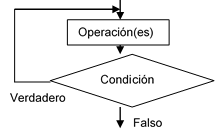

preguntas opción múltiple única respuesta Pregunta 1.- Las características esenciales de un algoritmo son: Respuestas Opción 1 Ambiguo, claro y finito. Opción 2 Finito, preciso y claro. Opción 3 Finito, preciso y ordenado. Opción 4 Ordenado, ambiguo y finito. Retroalimentación Incorrecto Incorrecto Opción correcta Incorrecto Solución Incorrecto (Retroalimentación) Incorrecto (Retroalimentación) Opción correcta (Retroalimentación) Incorrecto (Retroalimentación) Pregunta 2.- La siguiente representación de un algoritmo  Se denomina: Respuestas Opción 1 Algoritmo Opción 2 Pseudocódigo Opción 3 Programa Opción 4 Diagrama de flujo Retroalimentación Incorrecto Incorrecto Incorrecto Correcto. los diagrama de flujos de datos son la representación gráfica de un algoritmo. Solución Incorrecto (Retroalimentación) Incorrecto (Retroalimentación) Incorrecto (Retroalimentación) Opción correcta (Retroalimentación) Pregunta 3.- Un algoritmo contiene una estructura básica que está conformada por: Respuestas Opción 1 Datos, información y operaciones. Opción 2 Datos, instrucciones y estructuras de control. Opción 3 Datos, operaciones y estructuras de información. Opción 4 Datos, estructuras de información y información. Retroalimentación Incorrecto Opción correcta Incorrecto Incorrecto Solución Incorrecto (Retroalimentación) Opción correcta (Retroalimentación) Incorrecto (Retroalimentación) Incorrecto (Retroalimentación) Pregunta 4.- La siguiente representación de un algoritmo es: Inicio Acción 1; Acción 2; . . . Acción n; Fin Respuestas Opción 1 Programa Opción 2 Pseudocódigo Opción 3 Algoritmo Opción 4 Diagrama de flujo Retroalimentación Incorrecto Correcto. son la representación no gráfica de un algoritmo. Incorrecto Incorrecto Solución Incorrecto (Retroalimentación) Opción correcta (Retroalimentación) Incorrecto (Retroalimentación) Incorrecto (Retroalimentación) Pregunta 5.- Pseudocódigo es aquel que se trabaja a través de Respuestas Opción 1 Diagrama de flujos Opción 2 Instrucciones Opción 3 Lenguaje natural Opción 4 Operaciones lógicas Retroalimentación Incorrecto Incorrecto Opción correcta Incorrecto Solución Incorrecto (Retroalimentación) Incorrecto (Retroalimentación) Opción correcta (Retroalimentación) Incorrecto (Retroalimentación) Pregunta Teniendo en cuenta la siguiente situación: Situación: Se desea saber el promedio de un estudiante en el cuatrimestre, teniendo las notas de cada asignatura que se encuentra cursando. Responda las siguientes preguntas ( 6 a 10 ): 6.- Teniendo en cuenta el texto anterior se puede afirmar que es un: Respuestas Opción 1 Problema Opción 2 Algoritmo Opción 3 Diagrama Opción 4 Pseudocódigo Retroalimentación Correcto. Un problema es una situación que tiene solución. Incorrecto Incorrecto Incorrecto Solución Opción correcta (Retroalimentación) Incorrecto (Retroalimentación) Incorrecto (Retroalimentación) Incorrecto (Retroalimentación) Pregunta 7.- Al realizar la fase de análisis de la situación anteriormente descritas tenemos como datos las notas de cada asignatura, estos elementos se les denomina en esta fase: Respuestas Opción 1 Datos de salida Opción 2 Proceso Opción 3 Información Opción 4 Datos de entrada Retroalimentación Incorrecto Incorrecto Incorrecto Correcto. Son los datos que se requieren para realizar los cálculos matemáticos y obtener el resultado. Solución Incorrecto (Retroalimentación) Incorrecto (Retroalimentación) Incorrecto (Retroalimentación) Opción correcta (Retroalimentación) Pregunta 8.- Al realizar la fase de diseño de un problema se obtiene como resultado el Respuestas Opción 1 Algoritmo Opción 2 Diagrama de flujo Opción 3 Pseudocódigo Opción 4 Operaciones Retroalimentación Opción correcta Incorrecto Incorrecto Incorrecto Solución Opción correcta (Retroalimentación) Incorrecto (Retroalimentación) Incorrecto (Retroalimentación) Incorrecto (Retroalimentación) Pregunta 9.- Al realizar la fase de análisis de la situación anteriormente descrita tenemos como datos el promedio de las asignaturas, estos elementos se les denomina en esta fase: Respuestas Opción 1 Datos de salida Opción 2 Datos de entrada Opción 3 Proceso Opción 4 Datos conocidos Retroalimentación Correcto. Son los datos que pide mostrar o tambien es la solución del problema Incorrecto Incorrecto Incorrecto Solución Opción correcta (Retroalimentación) Incorrecto (Retroalimentación) Incorrecto (Retroalimentación) Incorrecto (Retroalimentación) Pregunta 10.- En la fase de pruebas de escritorio se realizan los cálculos descritos en el algoritmo porque: Respuestas Opción 1 Se verifica las instrucciones del algoritmo. Opción 2 Se comprueban las variables del algoritmo. Opción 3 Se comprueban los resultados del algoritmo. Opción 4 Se verifica las asignaciones realizadas al algoritmo Retroalimentación Incorrecto Incorrecto Opción correcta Incorrecto Solución Incorrecto (Retroalimentación) Incorrecto (Retroalimentación) Opción correcta (Retroalimentación) Incorrecto (Retroalimentación)